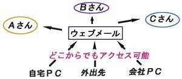
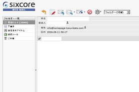
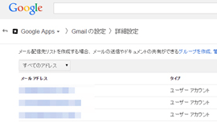
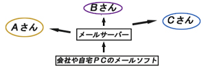
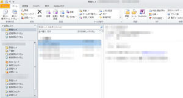

独自ドメインでのメールアドレスの作り方
取得した独自ドメインでメールアドレスを使用するには、「ウェブメール」を利用する方法と「メールソフト（メーラー）」を利用する方法の２種類があります。
レンタルサーバーのウェブメールを利用する方法
レンタルサーバーに付属のウェブメールやGoogle AppsのGmailなどを利用すると、パソコンにメールソフトをインストールしなくても、ウェブ上からそのままメールのやり取りをすることが出来ます。

利用するウェブメールにアクセスさえできれば、場所を選ばず、どこからでも利用できるメリットがあります。
一般的な無料メールアドレスもウェブメールになりますが、独自ドメインを設定できる無料サービスは少ないので、独自ドメインでメールアドレスを利用するにはレンタルサーバーを契約するか、もしくは有料のgoogle appsなどを利用するケースが多いです。
さくらインターネットの「メールボックス」プランなど、ホームページスペースは必要ない場合でも、メール機能だけ利用できる会社もあります。
設定する際には、「任意の文字列@取得した独自ドメイン」でメールアドレスを作成しますが、一般にinfo@独自ドメイン名で作成しているケースが多いように思えます。
例えば、当サイトのメールアドレスは独自ドメインの「homepage-tukurikata.com」に「info」を付けて「info@homepage-tukurikata.com」にて作成し、利用しているレンタルサーバーのウェブメールで使用しております。

このレンタルサーバーのウェブメールは利用するたびにログインするのが多少面倒なので、頻繁に使用する場合はG Suite（旧google apps）のgmailを利用すると便利です。フリーのgmailとまったく同じ仕様ですので使い勝手がよいですが、利用するには費用がかかります。

メールソフトを利用する方法
一方、パソコンにメールソフトをインストールして使うこともできます。この場合、そのメールソフトのあるＰＣからしかメールのやり取りはできません。
また、メールサーバーが必要になりますが、レンタルサーバーを契約している場合はたいていはメールサーバーも利用することができます。FTPアカウントやネームサーバーの情報とともに、メールサーバーの情報も通知されているはずですので確認してみてください。

代表的なメールソフトには、outlookやベッキー、サンダーバードなどがあります。
- Windows Live メール、Outlook（microsoft）
- Thunderbird（Mozilla）
- Becky!
例えば、パソコンにoutlook 2010をインストールして使用した場合、メールサーバーを経由してパソコン上からメールのやり取りをすることができます。

■メールソフトの設定方法
「POP」と「IMAP」の違い
メールソフトを使用する場合、主に「POP」と「IMAP」の２種類があります。「POP」はパソコンにメールをダウンロードする必要があるのに対し、「IMAP」の場合はサーバーにメールを残したまま閲覧することができます。どちらで利用するかを決めたら、まずは取得した独自ドメインでメールアカウントを作成しパスワードも設定しましょう。
次に、メールサーバーの情報を設定しますが、たいていはレンタルサーバーを契約した際にFTPアカウントやネームサーバーの情報とともに通知されるはずです。
ポート番号の設定などレンタルサーバーによって違いがありますので、詳細についてはお使いのレンタルサーバーのマニュアルをご参考にされることをおすすめします。
この「ウェブメール」と「メールソフト」を比較してみますと、利便性でみれば、操作性に優れたGmailなどのウェブメールが使いやすい印象があります。
また、安全性の面でいっても、自宅や会社のパソコンのセキュリティーとグーグルなどの大手企業が管理するウェブメールを比較してみると、どちらかといえば大企業が管理しているウェブメールの方が安心して利用できる印象があります。
もちろん、大手サービスでも不正ログインやデータ消失の可能性がありますが、自宅パソコンよりは安全性が高い傾向にあるかと思います。